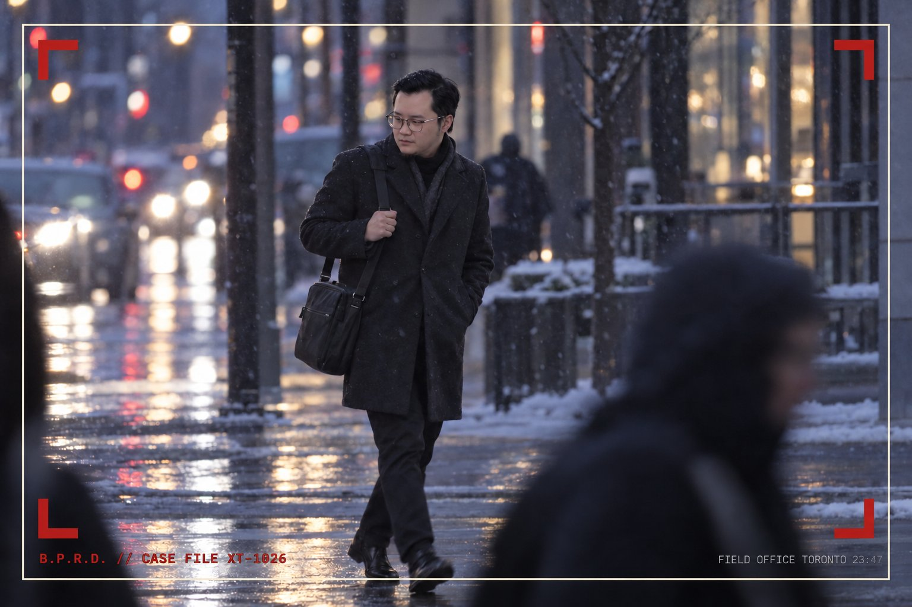

Subject Identification
- Designation
- XT-1026, “The Twilight Engineer”
- Known human alias
- S█m█n S█
- Point of origin
- Proxima Centauri b, Alpha Centauri system (approx. 4.24 light-years from Earth)
- Current location
- Toronto, Ontario
- Cover identity
- Graduate student, Master of Digital Media, Toronto Metropolitan University
- Status
- Active. Non-hostile. Watched.

Introduction
Subject XT-1026 is an extraterrestrial engineer currently residing in Toronto under the human alias S█m█n S█. To the casual observer, the subject is an ordinary graduate student who attends lectures, submits assignments, and carries a laptop at all times. Bureau analysts consider this an excellent disguise.
The subject has been under continuous observation since his arrival. In that time he has displayed no hostile intent, a remarkable tolerance for winter, and an ability to finish projects at hours most humans spend asleep. This brief summarizes what the Bureau is permitted to share at Clearance Level 1.
The question the Bureau has been asked to answer is simple: who is this individual, and why should the public care? The short answer is that he is the first known visitor from our nearest neighbouring star. The long answer is classified.
Origin Story
The subject originates from Proxima Centauri b, a rocky planet orbiting the red dwarf star Proxima Centauri, the closest star to our Sun. Human astronomers announced its discovery in 2016. They have not yet announced that it is inhabited. The Bureau would prefer that this remain the case.
Proxima b is tidally locked: one hemisphere faces its star in permanent, flare-scorched daylight, while the other lies in permanent frozen night. Life survives only along the narrow band between the two, a ring of endless dusk the inhabitants call the Hollow Line. Because the star unleashes violent radiation flares without warning, the native civilization, the Kethri, retreated underground long ago. Their cities are carved deep into basalt beneath the dusk, and every Kethri child learns to read flare warnings before learning to read.
In Kethri society, the most honoured profession is that of Shelter Engineer, the individuals who design the burrows, doors, seats, and lamps that keep the population alive during a flare. The subject was a Shelter Engineer of the Third Burrow, regarded as gifted and, according to recovered records, “tiresome about details.”
His career ended with what the Bureau refers to as the Comfort Incident. Tasked with redesigning the public flare shelters, the subject produced benches, lighting, and layouts so well considered that citizens declined to leave the shelters after the flare had passed. The planetary economy halted for eleven local years.2 The Kethri Council ruled that the subject had made shelter too pleasant to escape, and sentenced him to exile.
He was placed in a one-way transit pod and launched toward the nearest star with a habitable planet. The pod was recovered by Bureau agents at a parking lot behind a hardware store on the outskirts of the Greater Toronto Area. The subject was found sitting calmly beside it, reportedly asking where he might enroll in a graduate program.
Known Abilities
The following abilities have been confirmed by at least two independent field agents.
- Twilight vision. Raised in permanent dusk, the subject functions at full capacity in dim lecture halls and has been observed reading presentation slides before the projector finished warming up.
- Flare sense. Kethri training allows the subject to detect approaching danger well in advance. On Earth, this ability has adapted to detect assignment deadlines approximately 72 hours before they arrive.
- Nocturnal productivity. The subject sustains peak performance between 23:00 and 03:00 local time, when most of the human population is unconscious and therefore unable to interrupt him.
- Interface empathy. The subject can operate unfamiliar software within minutes of first contact. Analysts suspect the software is intimidated.
- Rapid prototyping. Given a problem in the evening, the subject frequently produces a working digital prototype by morning. The Bureau has been unable to determine where the time comes from.
- Human mimicry. The subject has mastered human small talk, including weather commentary, polite laughter, and the phrase “let’s circle back on that.”
Threat Assessment
| Attribute | Rating | Analyst Remark |
|---|---|---|
| Intelligence | █████████░ 9 | Asks follow-up questions that the lecturer has not prepared for. |
| Stealth | ██████░░░░ 6 | Blends in well, except when asked where he is from. |
| Hostility | █░░░░░░░░░ 1 | Only observed aggression was directed at a poorly designed door. |
| Adaptability | █████████░ 9 | Fully acclimatized to Toronto transit delays within two weeks. |
| Sunlight tolerance | ███░░░░░░░ 3 | See classified file, Section 3. |
| Curiosity about Earth food | ██████████ 10 | Rating capped by form design. True value unknown. |
Overall threat level: LOW (PROVISIONAL)
The remainder of this case file is restricted to agents holding Level 5 clearance.
Field Agent Notes
- Agent ███ insists the subject waved at the camera. Agent ███ insists it was a stretch. The matter has been escalated.
- One Proxima b year lasts roughly 11.2 Earth days, so the economic halt lasted about four Earth months. The Kethri still consider it a national catastrophe. (Agents with Level 1 clearance may hover over redacted text to view it. This is a known flaw in the redaction process.)